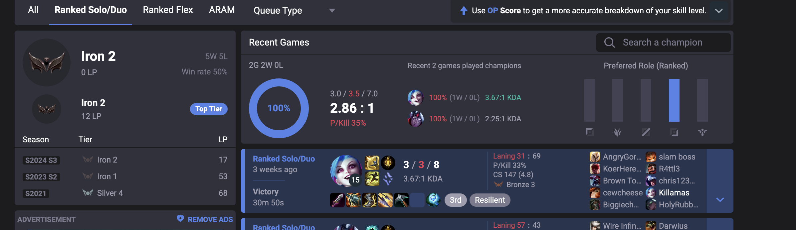

The Climb
- Tracking champions played and ranked performance
- Logging lessons learned from games
- Finding improvement patterns over time


- Weekly review summaries
- What worked, what didn’t
- Next goals
Week of July 14–20: Played 30 ranked games. Win rate 53%. Noticed better warding leads to more teamfight wins. Switching back to Jhin this week. Tilt-check: take breaks after 2 losses.